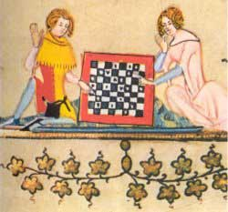

Welke redenen worden gegeven voor de populariteit van de Arthurromans?
Er zijn verschillende redenen voor de populariteit van de Arthurromans. Ten eerste was het gewoon vermaak. Als ridder is het leuk om verhalen te horen over andere ridders omdat je daar jezelf in kan herkennen. Een tweede reden is dat de ridder door de tijd heen veranderde qua status. Eerst waren ridders maar ruige mannen die elkaar vermoordden en maar nauwelijks respect hadden voor vrouwen. Later werd het belangrijk dat je als ridder een goed mens was. Dat betekende dat je je netjes kleedde, tafelmanieren had, eerlijk vocht en normaal omging met anderen. Je moest je hoffelijk gedragen, hoofs. Ook moest je alles doen voor je vrouw, je moet bijvoorbeeld bereid zijn pijn te lijden voor haar. Hoofs zijn werd populair, want wie wil er nou niet zo cool zijn als de ridders in de verhalen. Ridders zagen ook weer andere ridders zo goed zijn en wilden zelf net zo goed zijn. Door de Arthurromans konden ze leren hoe ze zich goed moesten gedragen.